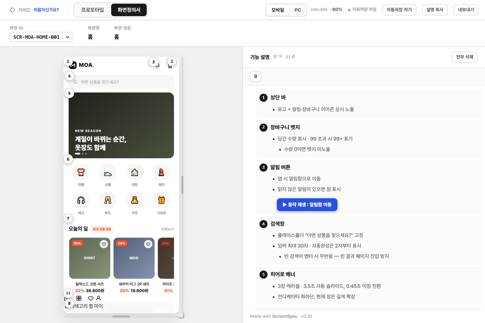
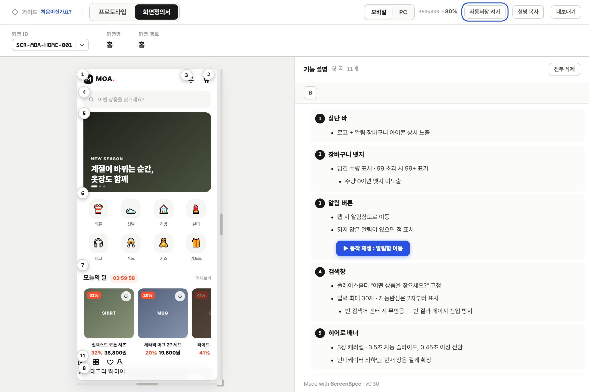
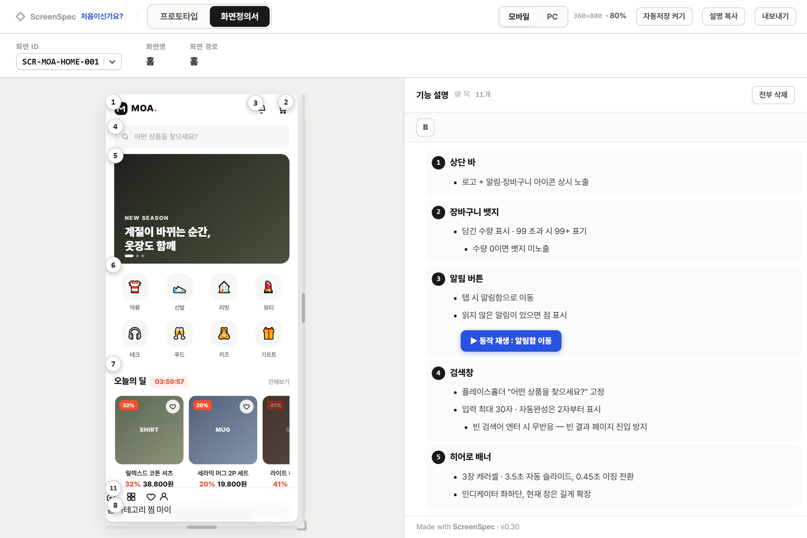

익힐 것 네 가지
고치기 · 번호 붙이기 · 저장 · 넘기기
3분이면 끝납니다. 지금 열어 둔 문서를 옆에 두고 따라 해 보세요.
글자 고치기
글자를 누르면 그 자리에서 고쳐집니다. 편집 모드를 켜고 끌 필요가 없습니다.
- 줄 늘리기
- Enter
- 불릿
- - 다음 스페이스
- 그 밖의 블록
- /
번호 붙이기
번호는 화면에서 찍습니다. 빈 줄에서 / 를 누르고 「번호」를 고른 다음, 화면에서 설명할 곳을 클릭합니다.
이름표는 자동으로 붙습니다. 코드에 손으로 적지 않습니다.

자동 저장
파일을 한 번 고르면 그 뒤로는 알아서 저장됩니다. 오른쪽 위 「자동저장 켜기」를 누르고 열어 둔 HTML 파일을 고릅니다.
크롬·엣지에서 파일을 직접 열었을 때 됩니다. 안 되는 곳에서는 「설명 복사」로 원본에 붙여넣습니다.

전달본 만들기
파일 하나로 뽑으면 어디서든 열립니다. 라이브러리까지 안에 들어가므로 받는 사람은 브라우저로 열기만 하면 됩니다.
node scripts/inline.js 내파일.html